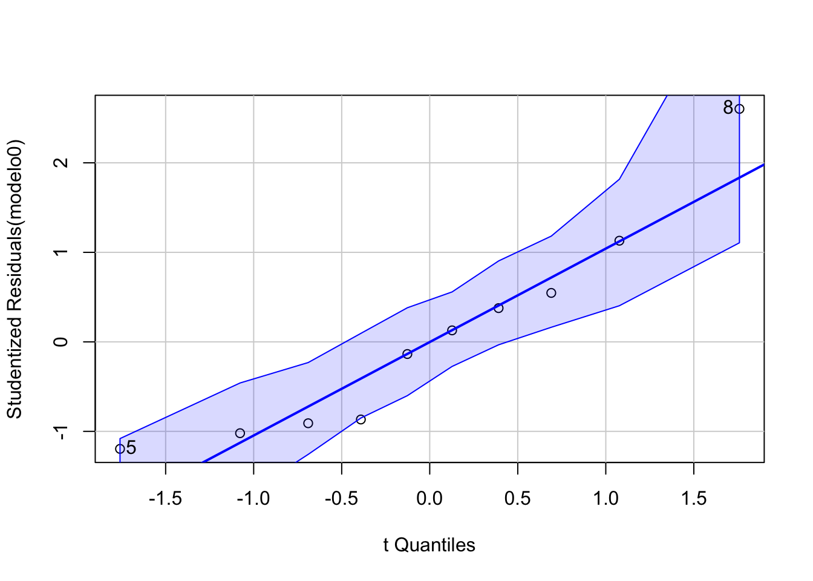

Vamos a utilizad “pacman” para cargar los paquetes que utilizaremos en esta sesión
#install.packages("sjPlot", dependencies=T) # solito porque da problmaslibrary(sjPlot)if (!require("pacman")) install.packages("pacman") # instala pacman si se requiere
Cargando paquete requerido: pacman
pacman::p_load(tidyverse, # sobretodo para dplyr haven, #importación janitor, #tablas sjlabelled, # etiquetas DescTools, # Paquete para estimaciones y pruebas infer, # tidy way broom, # Una escobita para limpiar (pero es para arreglar) estimatr, car, stargazer, ggpubr, performance, jtools, lm.beta, robustbase, sandwich, officer,flextable,huxtable, ggstance, kableExtra) # Para la regresión
8.2 Datos
E importamos la base e incluimos los cambios anteriores
etiqueta_sex<-c("Hombre", "Mujer")concentradohogar <- haven::read_dta("datos/concentradohogar.dta") %>%mutate(sexo_jefe=as.numeric(sexo_jefe)) %>%## para quitar el "string" sjlabelled::set_labels(sexo_jefe, labels=etiqueta_sex) %>%mutate(clase_hog=as.numeric(clase_hog)) %>%## para quitar el "string" sjlabelled::set_labels(clase_hog, labels=c("unipersonal","nuclear", "ampliado","compuesto","corresidente")) %>%mutate(educa_jefe=as.numeric(educa_jefe)) %>%set_labels(educa_jefe,labels=c("Sin instrucción", "Preescolar","Primaria incompleta","Primaria completa","Secundaria incompleta","Secundaria completa","Preparatoria incompleta","Preparatoria completa","Profesional incompleta","Profesional completa","Posgrado")) %>%mutate(ent=stringr::str_sub(folioviv, start=1, end=2 )) %>%mutate(ing_per=ing_cor/tot_integ) %>%mutate(recibe_rem=remesas>0)
8.3 Sub-setting para comparar modelos
Vamos a hacer una sub-base de nuestras posibles variables explicativas. Esto es importante porque sólo podemos comparar modelos con la misma cantidad de observaciones.
Para el ajuste global del modelo, podemos utilzar el comando “broom::glance()” sobre el objeto de nuestro modelo, ello nos dará la información correspondiente:
broom::glance(modelo) # resultado ajuste global
r.squared
adj.r.squared
sigma
statistic
p.value
df
logLik
AIC
BIC
deviance
df.residual
nobs
0.00995
0.00994
0.784
906
5.84e-198
1
-1.06e+05
2.12e+05
2.12e+05
5.53e+04
90091
90093
Otra manera de ver este ajuste es con el comando anova():
anova(modelo)
Df
Sum Sq
Mean Sq
F value
Pr(>F)
1
556
556
906
5.84e-198
90091
5.53e+04
0.614
9.2 Diagnósticos
plot(modelo)
9.3 Outliers y Normalidad
car::outlierTest(modelo) # Bonferonni p-value for most extreme obs
outliers<-as.integer(rbind(names(out$bonf.p), qqPlot)) # lista los casos
Vamos a eliminar estos casos que son extremos (¡Ojo! esto tiene implicaciones de interpretación y debe ser justificado metodológicamente y ser señalado como una limitante)
Tenemos el nombre de las filas que nos dan problemas
mydata$rownames<-rownames(mydata)#View(mydata) # verificamos que no hayamos movido el ordenmydata2<- mydata %>%filter(rownames%in%outliers)
Call:
stats::lm(formula = log_ing_per ~ edad_jefe, data = mydata2,
na.action = na.exclude)
Residuals:
Min 1Q Median 3Q Max
-0.47861 -0.36686 0.00284 0.19251 0.78243
Coefficients:
Estimate Std. Error t value Pr(>|t|)
(Intercept) 14.056225 0.469793 29.92 1.69e-09 ***
edad_jefe 0.003477 0.009924 0.35 0.735
---
Signif. codes: 0 '***' 0.001 '**' 0.01 '*' 0.05 '.' 0.1 ' ' 1
Residual standard error: 0.4415 on 8 degrees of freedom
Multiple R-squared: 0.01511, Adjusted R-squared: -0.108
F-statistic: 0.1227 on 1 and 8 DF, p-value: 0.7351
¿Cuando parar?
qqPlot(modelo0)

[1] 5 8
outlierTest(modelo0)
No Studentized residuals with Bonferroni p < 0.05
Largest |rstudent|:
rstudent unadjusted p-value Bonferroni p
8 2.602599 0.035291 0.35291
¡Este puede ser un proceso infinito! Si quitamos lo anormal, esto mueve nuestros rangos y al quitar un outlier, otra variable que antes no era outlier en el ajuste se puede convertir en outlier.
Este modelo tiene coeficientes que deben leerse “condicionados”. Es decir, en este caso tenemos que el coeficiente asociado a la edad, mantiene constante el valor de sexo y viceversa.
¿Cómo saber is ha mejorado nuestro modelo? Podemos comparar el ajuste con la anova, es decir, una prueba F
pruebaf0<-anova(modelo, modelo1)pruebaf0
Res.Df
RSS
Df
Sum of Sq
F
Pr(>F)
9.01e+04
5.53e+04
9.01e+04
5.53e+04
1
54.9
89.5
3.17e-21
Como puedes ver, el resultado muestra “DF” (grados de libertad en español) de 1 (lo que indica que el modelo más complejo tiene un parámetro adicional) y un valor p muy pequeño (<.001). Esto significa que agregar el sexo al modelo lleva a un ajuste significativamente mejor sobre el modelo original.
Podemos seguir añadiendo variables sólo “sumando” en la función
Call:
stats::lm(formula = log_ing_per ~ edad_jefe + sexo_jefe + tot_integ,
data = mydata, na.action = na.exclude)
Residuals:
Min 1Q Median 3Q Max
-4.1272 -0.4595 -0.0115 0.4437 4.9554
Coefficients:
Estimate Std. Error t value Pr(>|t|)
(Intercept) 10.1905123 0.0100635 1012.620 < 2e-16 ***
edad_jefe 0.0018752 0.0001521 12.328 < 2e-16 ***
sexo_jefeMujer -0.0332046 0.0052079 -6.376 1.83e-10 ***
tot_integ -0.1831798 0.0013669 -134.010 < 2e-16 ***
---
Signif. codes: 0 '***' 0.001 '**' 0.01 '*' 0.05 '.' 0.1 ' ' 1
Residual standard error: 0.7153 on 90089 degrees of freedom
Multiple R-squared: 0.1753, Adjusted R-squared: 0.1753
F-statistic: 6384 on 3 and 90089 DF, p-value: < 2.2e-16
Y podemos ver si introducir esta variable afectó al ajuste global del modelo
pruebaf1<-anova(modelo1, modelo2)pruebaf1
Res.Df
RSS
Df
Sum of Sq
F
Pr(>F)
9.01e+04
5.53e+04
9.01e+04
4.61e+04
1
9.19e+03
1.8e+04
0
Hoy que tenemos más variables podemos hablar de revisar dos supuestos más.
10.2 Otros supuestos
Además de los supuestos de la regresión simple, podemos revisar estos otros. De nuevo, usaremos el paquete {car}
Linealidad en los parámetros (será más díficil entre más variables tengamos)
La normalidad también, porque debe ser multivariada
Multicolinealidad La prueba más común es la de Factor Influyente de la Varianza (\(VIF\)) por sus siglas en inglés. La lógica es que la multicolinealidad tendrá efectos en nuestro \(R^2\), inflándolo. De ahí que observamos de qué variable(s) proviene este problema relacionado con la multicolinealidad.
Si el valor es mayor a 5, tenemos un problema muy grave.
La tolerancia es inverso multiplicativo de VIF, es decir $1-{R_j}^2 $
10.3.2 Visualización
Esto se puede tarda un rato
performance::check_model(modelo2, se=F)
10.4 Ejercicio
Corre un modelo con al menos dos variables con tu base de datos. Si en tu tema la variable dependiente no numérica, puedes correr un modelo de los gastos e incluir las variables clase_hog y educa_jefe